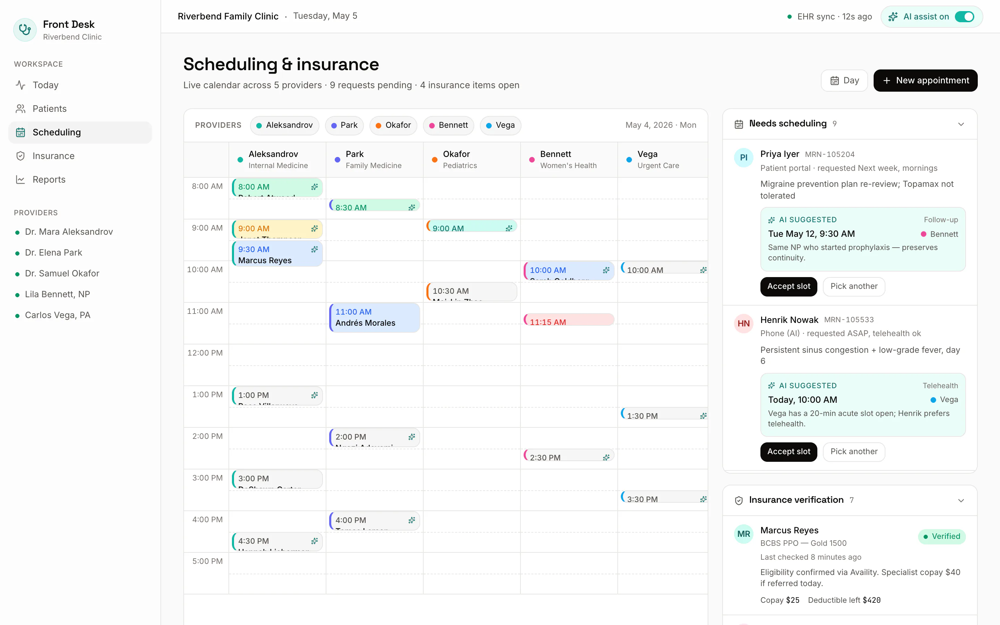
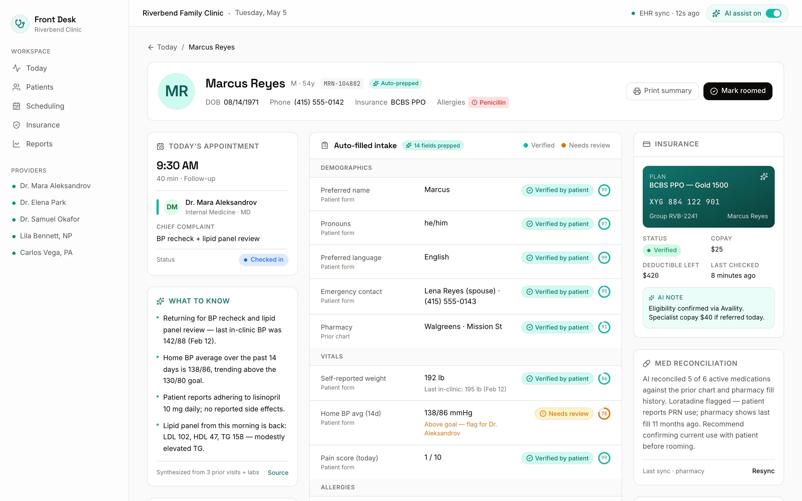

Auto-filled intake
Forms populate from prior charts and insurance records, each field carrying a confidence ring and a "verified by patient" badge.
- Confidence rings on every field
- "Verified by patient" badges
- Per-patient AI summary from history
Patient Front Desk pre-fills intake, suggests scheduling slots and verifies insurance before the patient walks in — so your team handles exceptions, not forms.
Tue 6 Jul · 4 providers
Three jobs the front desk used to do by hand — now done by an AI receptionist working from prior charts, provider calendars and insurance databases.
Forms populate from prior charts and insurance records, each field carrying a confidence ring and a "verified by patient" badge.
A calendar across every provider suggests slots by visit type and availability — and snaps the right patient into the right opening.
Eligibility runs overnight in a dedicated queue, with AI-drafted phone scripts ready for the tricky calls that still need a human voice.
Every appointment moves through the same pipeline overnight. By morning, only the fourth step needs a person.
Prior charts and insurance records populate intake, each field scored with a confidence ring.
The right opening is proposed by visit type and provider availability, then snapped onto the calendar.
Eligibility runs overnight, so denials surface the day before check-in — not at the front desk.
The handful that need judgement — a denial, a mismatch — reach a person with an AI-drafted script ready.
Three views from the product: the waiting room for today, the calendar across providers, and a single patient's auto-filled record.
Eighteen appointments, with the fourteen AI-handled ones already green. Status and SLA-at-risk visits surface first, so the queue reads as a to-do list — not a wall of forms.

The calendar spans providers with AI-suggested slots by visit type, alongside the insurance-verification queue. Overnight eligibility results land here, ready before the first patient checks in.

A single patient's record with auto-filled intake, confidence rings on each answer and an AI summary pulled from prior history. What the patient confirms carries a "verified by patient" badge.

The majority of intake runs autonomously. Your team's day starts on the few visits that genuinely need judgement — with the context already gathered.
Illustrative of a typical clinic day — 14 of 18 AI-handled.
Walk through your own schedule with us — intake, scheduling and insurance, prepped overnight so your front desk works exceptions, not forms.
Built for multi-clinic groups — we usually reply within one business day.